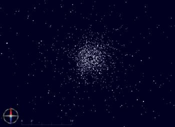

De UCAC3 sterrencatalogus is eind augustus 2009 gepubliceerd door USNO.
De belangrijkste eigenschappen zijn:
Op basis van de bovenstaande eigenschappen is deze catalogus samengesteld voor gebruik met Cartes du Ciel.
De informatie van iedere ster omvat: identificatie, RA, Dec, schijnbare magnitude, eigenbeweging, benaderde kleurindex (afkomstig van SuperCosmos B en R2).
Om het probleem van de ontbrekende heldere sterren op te lossen zijn in deze catalogus de sterren weggelaten die in Tycho2 voorkomen of helderder zijn dan magnitude 10. Dit betekent dat je de Tycho2 catalogus tegelijk moet gebruiken met deze catalogus.
Voor gebruik van deze catalogus, moet je de delen van de catalogus downloaden die je wilt gebruiken vanaf de download catalogs pagina.
De catalogus is in drie delen opgesplitst, zodat je niet per se alles hoeft te downloaden. Je kunt ervoor kiezen om alleen het deel te downloaden dat op jouw locatie zichtbaar is.
Een vierde bestand ucac3-index.zip bevat de optionele zoek-index voor alle zones.
Ieder bestand is ongeveer 500 MB in grootte.
Pak de zip-bestanden uit in de map ciel\cat (Windows) of share/skychart/cat (Linux, etc). Wanneer je gevraagd wordt om te kiezen om bestaande bestanden te vervangen kun je veilig Ja of Nee kiezen, omdat deze bestanden zelfstandig werkt.
Open binnen Cartes du Ciel via de menubalk Instellingen -> Catalogi, klik de Toevoegen knop en selecteer het bestand 3uc.hdr. Klik op het rode vakje in de eerste kolom om het vakje groen te maken.
Open daarna de Cdc Stars sectie om Tycho2 te activeren en de GSC te deactiveren. Vergeet niet om deze instellingen op te slaan.
Mijn voorkeursinstellingen voor algemeen gebruik zijn nu:
| Catalogus | Veldnummer | Veldafmetingen |
|---|---|---|
| Bright Star Catalog | 0 - 10 | 0° - 360° |
| Tycho 2 | 0 - 6 | 0° - 45° |
| 3UC | 0 - 3 | 0° - 5° |
Als je een kopie hebt van de UCAC3 DVD, dan kun je Catgen gebruiken om zelf je catalogus samen te stellen van de originele databestanden. Dit maakt je mogelijk om meer of minder informatie toe te voegen per ster, net wat je wil.
Eerst moet je de binaire gegevens van de DVD converteren naar ASCII tekstbestanden via het meegeleverde u3read programma, of via mijn u3conv programma.
Het voordeel van u3conv is dat het alle bestanden tegelijk bewerkt en dat het de steridentificatie en kleurindex toevoegt na de andere gegevens. En het bevat de mogelijkheid om de Tycho2 en heldere sterren eruit te fliteren.
Je kunt u3conv voor Windows en Linux downloaden vanaf hier, de sourcecode vind je hier. Start het programma in een consolevenster, ook om de syntax en help te tonen.
Gebruik daarna Catgen om de tekstbestanden te converteren naar een binaire catalogus die geoptimaliseerd is voor weergave binnen Cartes du Ciel. Je kunt beginnen door dit project bestand te laden voor de standaard catalogus.
Gebruik voor Cartes du Ciel een recentere ontwikkelversie dan skychart-3.1-1232 omdat de eerdere enkele bugs bevatten in Catgen.
{kind=link}